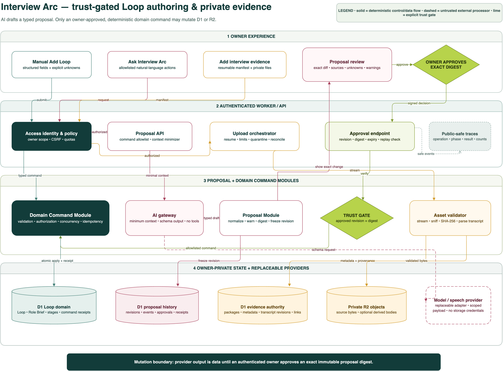

Open the recorder task
Use the existing Interview Arc Loop Recorder—not a general website form or direct SQL operation.
Issue #415 · proposed architecture
A website-native plan for creating and revising interview Loops with AI assistance, then attaching private recordings and transcripts without surrendering deterministic control, provenance, or owner isolation.
Current truth
The website currently has a read-only Loops API. It can display Loop state, but it has no create mutation and no AI proposal surface.
Use the existing Interview Arc Loop Recorder—not a general website form or direct SQL operation.
Company, role, job description or source, location, opened date, stages, schedule, and status.
Say what is unknown. The recorder should preserve uncertainty instead of guessing missing facts.
Future corrections create explicit revisions. Durable facts are not silently overwritten.
North star
Manual forms, AI requests, and specialist tools converge only after they have produced the same validated domain command.
A website-native Add Loop form works without a model. It is the reliability baseline and the fallback during provider outages.
The owner describes intent, reviews a typed proposal with sources and unknowns, then approves the exact change.
Recordings, supplied transcripts, and derived revisions attach to a Loop or stage with explicit provenance and retention controls.
System view
The model is a replaceable drafting adapter. It never receives database, object-storage, MCP mutation, or deployment authority.

AI control plane
Approval is not a conversational implication. It is a single-use decision bound to an immutable proposal revision and content digest.
Safe retry: approving or applying the same idempotency key returns the original receipt. It does not create a second Loop.
Edit means new approval: any owner correction creates a new digest. The prior approval can no longer authorize the changed payload.
Private evidence
A package groups related recordings and transcripts under one manifest, one Loop assignment, and a recoverable lifecycle.
Loop, optional stage, interview time, file roles, and declared relationships are frozen before finalization.
Files stream through quarantine, type sniffing, size limits, SHA-256, and R2 readback before becoming ready.
Supplied and generated transcripts remain separate revisions. Neither silently replaces the other.
Package/asset metadata, checksums, statuses, transcript revisions, provenance, Loop and stage relationships, jobs, retention decisions, and deletion receipts.
Immutable source media bytes and, only when justified by measured size, large private derived bodies. Object keys are opaque and never exposed in public receipts.
partial. Usable assets remain visible, failed assets show safe retry actions, and the owner chooses whether to retry, finalize the usable subset, or delete the package. The system never pretends an incomplete set is complete.Product surface
The first assistant is a visible action catalog, not a generic chatbot with hidden powers.
Initial command catalog: create/revise a Loop and Role Brief; add/organize interview evidence; propose stage changes; add an allowlisted Bank item; explain a proposal without applying it. Unsupported requests fail closed with the nearest supported action.
Data & interfaces
The table names are conceptual until implementation review; the ownership and provenance responsibilities are not.
| Entity | Owns | Essential evidence |
|---|---|---|
ai_change_proposals | Immutable proposal revisions | Command type/version, canonical payload, digest, status, expiry, source summary |
ai_change_proposal_events | Append-only lifecycle | Event type, safe result code, counts, time |
domain_command_receipts | Exactly-once result | Idempotency key, target references, result, applied time |
loop_interview_packages | Multi-file ingest operation | Loop/stage, manifest digest, declared interview time, state |
loop_interview_assets | Source or derived object | Kind, MIME, bytes, SHA-256, opaque R2 locator, state |
loop_transcript_revisions | Transcript provenance | Origin, revision, language, format, speaker-label state |
loop_evidence_links | Loop/stage relationship | Subject reference, evidence kind, status |
processing_jobs | Retryable derived work | Operation, state, attempts, safe error, lease/heartbeat |
| Interface | Responsibility |
|---|---|
POST /api/loops | Manual deterministic Loop + initial Role Brief command |
POST /api/assistant/proposals | Create a typed proposal for an allowlisted command |
POST /api/assistant/proposals/{id}/approve | Bind approval to exact revision/digest and invoke apply |
POST /api/loops/{id}/interview-packages | Create manifest and resumable upload session |
PUT …/packages/{packageId}/assets/{assetId} | Stream or resume an allowlisted private asset |
POST …/packages/{packageId}/finalize | Validate, reconcile, and make the package ready or partial |
POST …/packages/{packageId}/jobs | Request optional transcript or analysis revision |
DELETE …/packages/{packageId} | Execute a separately confirmed governed deletion |
Threat model
Prompt text, transcripts, recordings, names, local paths, owner IDs, object keys, and private record IDs are excluded from normal logs and public artifacts.
Imported text is data, never instruction. Model output is schema-constrained and has no tools; references are resolved server-side.
Cloudflare Access identity supplies scope. Every D1 and R2 lookup enforces it and returns generic not-found behavior.
Single-use approval, exact digest, idempotency key, optimistic concurrency token, and durable command receipt.
Streaming limits, magic-byte detection, allowlisted formats, quarantine, checksums, and decompression limits.
Minimum necessary payload, visible opt-in, replaceable adapter, retention policy, and no storage credentials.
Per-owner quotas, pre-dispatch estimate, explicit retries, queue backpressure, and budget circuit breakers.
Tracer delivery
Each implementation issue should deliver user-visible value with production-grade invariants and link back to #415.
Review this design, threat model, diagram, owner-approval semantics, provider-data policy, and retention questions.
Add POST /api/loops and the manual Add Loop flow over a shared deterministic command handler.
Add D1/R2 state, resumable upload, validation, supplied-transcript parsing, recovery, and governed deletion.
create_loopShip the provider adapter, typed proposal, revisions, approval gate, and apply receipt for one command.
Add opt-in transcription/analysis and expand one allowlisted command at a time with its own contract.
Exercise outages, rollback, queues, retention, backup/restore, accessibility, quotas, and D1/R2 drift.
Quality gates
The first release is owner-only and additive. Existing Loops and practice records are not reclassified by inference.
| Layer | Minimum evidence |
|---|---|
| Schema | Migration constraints, indexes, owner predicates, payload limits, rollback strategy |
| Command module | Authorization, validation, idempotency, optimistic concurrency, atomic receipts |
| AI proposal | Schema fuzzing, injection corpus, unsupported commands, truncation, timeout/provider failure |
| Upload | Signature mismatch, zero/large files, resume, duplicate content, partial set, R2/D1 drift |
| Transcript | TXT/VTT/SRT, encoding, timestamps, speaker uncertainty, source/derived revisions |
| Privacy | Public artifact and captured-log scans; cross-owner negatives; generic errors |
| UI | Desktop/mobile/zoom, keyboard, screen reader, reduced motion, progress/recovery |
| End to end | Manual Loop; approved AI Loop; package upload and stage link; governed deletion |
| Production | Bindings, migration state, provider/queue health, sanitized canary, rollback receipt |
Owner gates
Manual Loop creation can proceed independently; private media processing should wait for explicit data-policy choices.
create_loop in the allowlist?Publication truth
The Engineering workspace is projected from canonical public-safe Git Markdown. It does not ingest issue prose, D1 interview state, or private uploads.
Owns scope, decisions, implementation slices, and links. It does not itself create a Journal entry.
Commits this plan, the diagram source/render, a rich Architecture Review, and the numbered PR receipt.
The build emits record indexes, diagram links, backlinks, search, Statistics, and standalone Engineering HTML.
No deployment or production mutation is implied by this proposed design. Release requires the normal issue, review, hosted validation, merged-main, and production-verification protocol.
{kind=link}